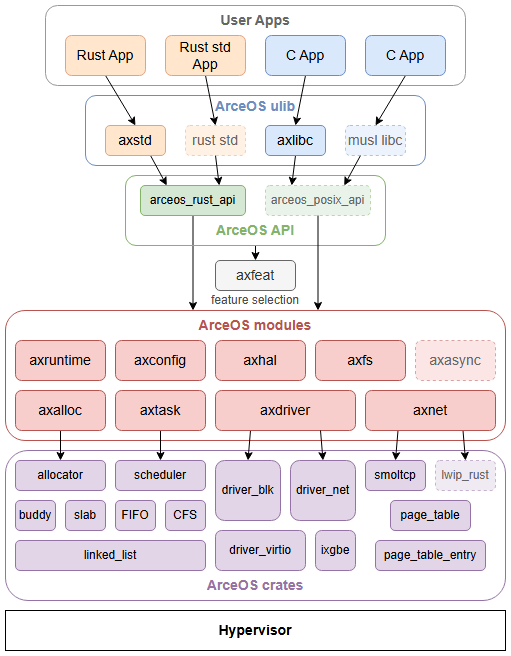

AxVisor: The unified modular hypervisor based on ArceOS.
This project originated from the discussion/13 of rCore-OS community.
-
add virtualization support crates/modules based on ArceOS unikernel
-
build a modular hypervisor that supports multiple architectures based on the basic OS functions
-
hope to make the hypervisor as modular as possible and minimize modifications to the arceos kernel code.
ArceOS
- An experimental modular OS in Rust.
- basic architecture: unikernel
- modules/crates
- kernel-dependent modules
- axtask,axdriver,...
- Kernel-independent crates
- buddy allocator, page_table...
- kernel-dependent modules

Heterogeneous expansion based on arceos kernel components

- Kernel Backbone: arceos components
- Monolithic kernel extension: starry-next
- process address space management
- process abstraction
- syscall support
- Hypervisor extension: arceos-hypervisor
- VM address space management
- emulated devices (interrupts, serial ports, etc.)
- VM exit interface support
arceos-umhv
Unified modular ArceOS hypervisor, mainly composed of the following independent components:
Components
- axvcpu: provides CPU virtualization support
- highly architecture-dependent
- stores exception context frame of different architecture
- basic scheduling item
- arch-specific vcpu implementations need to be separated into separate crates:
Components
- axdevice: a module of ArceOS, provides device emulation support
- partially architecture-independent
- different emulated device implementations need to be separated into separate crates
- x86_vlapic
- arm_vgic (v2,v3,v4)
- riscv_vplic
- virtio-blk
- virtio-net
- ...
Components
- axaddrspace: provides guest VM address space management
- nested page table implementation for different architectures
- maybe combined with process virtual address space management
- responsible for managing and mapping the guest VM's second-stage address space (GPA -> HPA)
- implemented based on ArceOS crates:
Components
- axvm: responsible for resource management within each VM
- partially architecture-independent
- a instance of guest virtual machine
- resources:
- address space of guest VM
- axvcpu list
- axdevice list
Components
- vmm-app: acts like a VMM (Virtual Machine Monitor)
- As an ArceOS unikernel app, directly call arceos functions
- completely architecture-independent
- responsible for VM management (configuration & runtime)
VCpu Scheduling : based on axtask
for vcpu in vm.vcpu_list() {
axtask::spawn(|| {
let curr = axtask::current();
let vcpu = unsafe { curr.task_ext().vcpu.clone() };
let vm = unsafe { curr.task_ext().vm.clone() };
loop {
let exit_reason = vcpu.run();
match exit_reason {
MMIO(emu_ctx) => vm.handle_device(emu_ctx),
HVC(emu_ctx) => vm.handle_hvc(emu_ctx),
EXIT(code) => axtask::exit(code),
...
}
}
}
);
}
Exception (VM-Exit) Handling
The vcpu scheduling design mentioned above requires a reasonable exception (VM-Exit) handling framework.
- x86_64
- host-state area of the VMCS can flexibly determine the
ripvalue after a VM-Exit occurs - Therefore, we can save the context properly in the host sp during
vmlaunch/resume, store the host sp pointer, and pop the context from the host sp in thevmx_exitfunction when a VM-Exit occurs. All of these operations are performed in vmx mod, which elegantly limits the interaction with the guest VM to thevcpu.run()function.
- host-state area of the VMCS can flexibly determine the
Exception (VM-Exit) Handling
The vcpu scheduling design mentioned above requires a reasonable exception (VM-Exit) handling framework.
-
aarch64
VBAR_EL2register holds the vector base address- to run arceos in EL2 to support virtualization, we need to make intrusive modifications to arceos's axhal module.
- save callee saved registers in EL2's stack manually
Multilayer VM-Exit handling
VM-Exits in x86_64, aarch64 and riscv64 follow the same design logic but share a slightly different implementation.
- Inner-VCpu handling
- e.g. under x86_64, some VM-Exit items are architecture specific (
CR_ACCESS,CPUID)
- e.g. under x86_64, some VM-Exit items are architecture specific (
- Inner-VM handling
- leaving device emulation related and page-fault related VM-Exits inside axvm
- (Outer-VM)vmm-app handling
- including the handling of hypercalls (handling this within the VMM also seems quite reasonable) and any (if-any) VM-Exit types that require vCPU scheduling or vCPU exit
Memory Management
-
similar to the address space management of the arceos-monolithic.
-
take advantage of crate memory_set and register the PageTable as our AxNestPageTable.
#![allow(unused)] fn main() { /// The virtual memory address space. pub struct AddrSpace<H: PagingHandler> { va_range: GuestPhysAddrRange, areas: MemorySet<Backend<H>>, pt: PageTable<H>, } }
we hope to find a way to unify address space management for both monolithic and hypervisor variants of ArceOS.
Emulated Device
axdevice crate provides struct like AxEmulatedDevices, which will be owned and managed by AxVM.
pub struct AxEmulatedDevices {
mmio_devices: BTreeMap<Range<usize>, dyn EmuDev>,
#[cfg(target_arch = "x86_64")]
pio_devices: BTreeMap<Range<usize>, dyn EmuDev>,
}
pub trait EmuDev {
fn emu_type(&self) -> EmuDeviceType;
fn address_range(&self) -> Range<usize>;
fn handler(&self, ctx: &AccessContext) -> AxResult;
}
Dependency diagram

Since modules/crates used for virtualization functionality in the ArceOS-Hypervisor architecture need to call OS-related resource management interfaces, while we aim to consolidate all OS-related dependencies within the vmm-app.
Various modules/crates will achieve dependency injection through Rust traits.
Example about how we achieve dependency injection
Taking axaddrspace for an example, its AddrSpace represents memory regions and two-stage address mapping for guest VM, which relies on a generic type PagingHandler for page table related stuff.
/// The virtual memory address space.
pub struct AddrSpace<H: PagingHandler> {
va_range: VirtAddrRange,
areas: MemorySet<MappingFlags, PageTable<H>, Backend>,
pt: PageTable<H>,
}
Example about how we achieve dependency injection
axaddrspace is owned and managed by axvm's AxVM structure, which replies on AxVMHal trait ( defined in axvm's hal.rs ) .
Indeed, PagingHandler is a associate type of AxVMHal trait.
/// The interfaces which the underlying software (kernel or hypervisor) must implement.
pub trait AxVMHal: Sized {
type PagingHandler: page_table_multiarch::PagingHandler;
/// Converts a virtual address to the corresponding physical address.
fn virt_to_phys(vaddr: HostVirtAddr) -> HostPhysAddr;
/// Current time in nanoseconds.
fn current_time_nanos() -> u64;
// ...
}
Example about how we achieve dependency injection
While AxVMHal is implemented by AxVMHalImpl in vmm-app, which rely on PagingHandlerImpl from ArceOS's axhal module to implement its associate type PagingHandler.
pub struct AxVMHalImpl;
impl AxVMHal for AxVMHalImpl {
type PagingHandler = axhal::paging::PagingHandlerImpl;
fn virt_to_phys(vaddr: VirtAddr) -> PhysAddr {
axhal::mem::virt_to_phys(vaddr)
}
fn current_time_nanos() -> u64 {
axhal::time::monotonic_time_nanos()
}
// ...
}
Dependency injection
So, current design achieve dependency injection through Rust's generic type (Trait) and its associate type mechanism.
For other virtualization-related modules/crates such as axvcpu, axdevice, etc.,
we also want them to expose well-designed generics, and to converge these carefully crafted generics as subtraits or associated types within the AxVmHal trait of axvm (since axvm is reponsible for VM resource management).
Ultimately, the vmm-app layer will call the relevant functionalities of ArceOS to implement them.